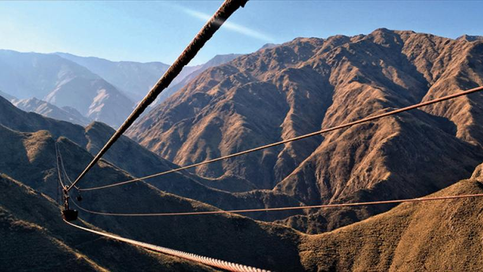
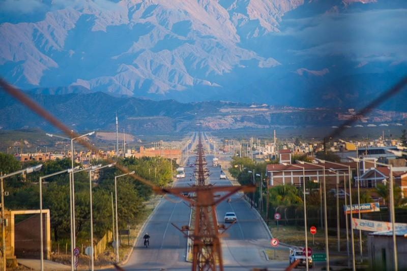
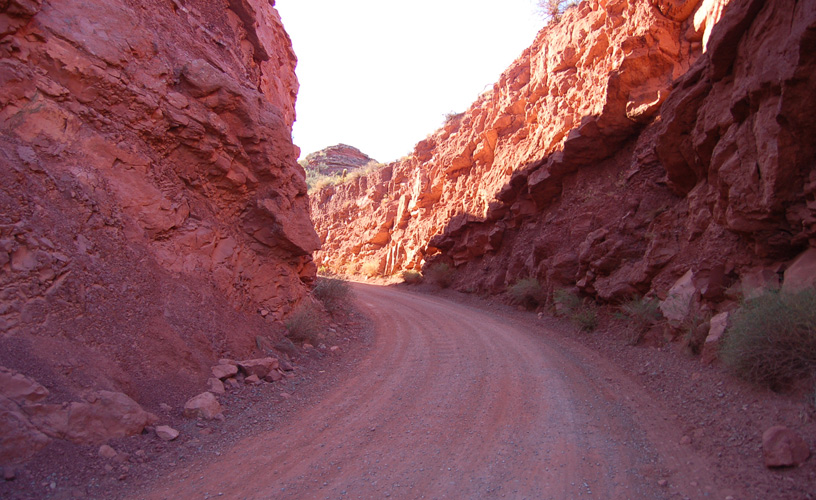
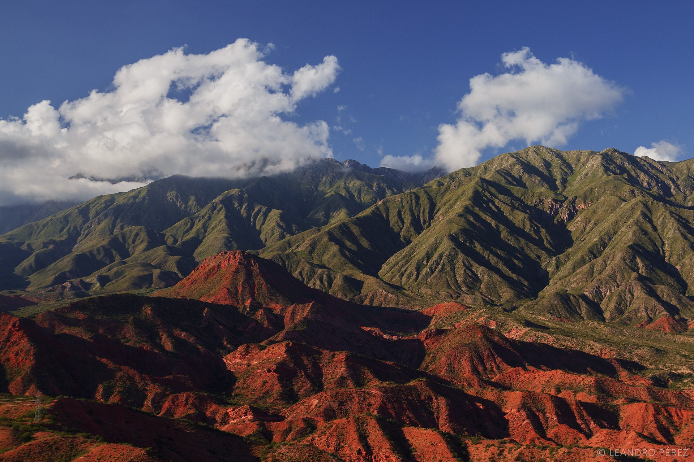
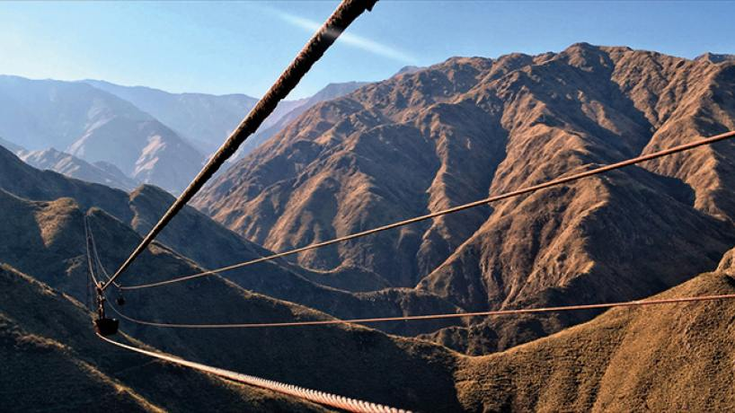
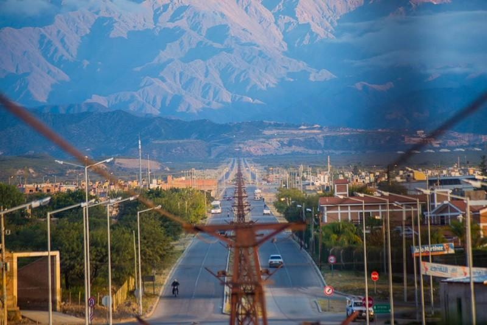
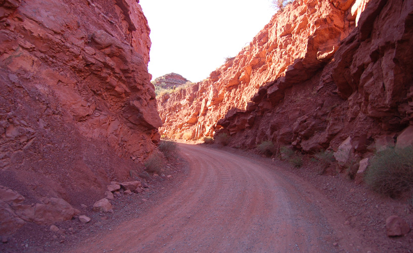
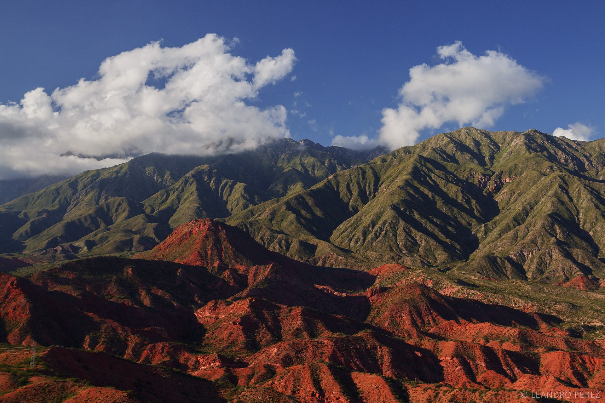

Valles Iglesianos y Chilecito

2 noches en San Juan
1 noche en Valle Fértil
2 noches en Villa Unión
Incluye:
Transfer
Hotel
Excursiones
Coordinador
NO incluye
Entradas a Parques Nacionales, Entradas a Museos, Comidas y bebidas, Tasas de embarque, Asistencia Médica.
Circuito interno en Talampaya.
(Excepto que se aclare lo contrario)
Día 1: Trf In aeropuerto de San Juan. A las 14,30 hs. Gran City Tour Ciudad y Alrededores: Auditorio Juan Victoria, Casa Natal de Sarmiento, Catedral, Teatro del Bicentenario (visita periférica), Bodega Merced del Estero ó Aceitera Campo de Olivos, Dique de Ullum. Alojamiento en San Juan.
Día 2: Traslado a Valle Fértil. Visita al Parque Provincial Natural Ischigualasto o Valle de la Luna, Patrimonio Natural de la Humanidad, y Museo de Ciencias Naturales. Alojamiento en Valle Fértil.
Día 3: Check out y partida para visitar el Parque Nacional Talampaya. Alojamiento en Villa Unión, La Rioja.
Día 4: Exc. full day a Chilecito por Cuesta de Miranda donde se destacan placas tectónicas a casi 90º de color rojizo. La Cuesta de Miranda es un tramo de la Ruta 40 que era famoso por su dificultad: angosto camino de cornisa que cuelga de las abruptas paredes de la quebrada del río Miranda. Cruza un abra entre las Sierras de Famatina y Sañogasta. Hoy está totalmente pavimentada y es muy fácil de recorrer. Situada entre las ciudades de Chilecito y Villa Unión en La Rioja. Su altura máxima es de 2.040 metros sobre el nivel del mar.
Recorrido por Chilecito donde visitaremos el Cable Carril Estación 1, el Museo de la Minería y la Estación 2 para tener una vista panorámica. En pleno auge de la minería, entre 1900 y 1930, se construyó en el corazón del Cerro Famatina un sistema de transporte aéreo llamado Cable Carril, proyecto ejecutado por una empresa alemana. Este sistema permitió transportar minerales desde la mina "La Mejicana", a 4.500 metros, hasta la ciudad de Chilecito, en un tramo que supera los 35 kms de longitud. Estuvo en funcionamiento hasta 1926 cuando los ingleses, quienes explotaban dicha mina, se fueron de la zona dejando esta mega obra de ingeniería que con el paso de los años fue definitivamente abandonada. En los años ´80 el municipio de Chilecito se hace cargo del Cable Carril, que fue declarado Monumento Histórico Nacional el 25 de octubre de 1982. Alojamiento en Villa Unión.
Día 5: Regreso a San Juan por la bellísima Cuesta de Huaco hasta el Cañón del Río Jáchal. Visita al Dique Cuesta del Viento, de características únicas por los vientos que soplan y permiten la práctica de deportes acuáticos como el windsurf y el kitesurf, además de pesca. Visita a Finca "El Martillo" con un recorrido por sus instalaciones a través de sus cultivos orgánicos y su granja, además de su coto de trucha privado. Paseo por los pueblos de Villa Iglesia, Las Flores, Rodeo, Termas de Pismanta y Capilla de Achango de historia jesuítica y declarada Monumento Histórico Nacional, antes de introducirnos nuevamente en la precordillera por la ruta 436, camino que nos llevará en su punto más elevado a los Altos del Colorado, para arribar a la ciudad de San Juan. Posibilidad de compra de artesanías y dulces. Alojamiento en San Juan.
Día 6: Trf out terminal de buses o aeropuerto de San Juan.
 






